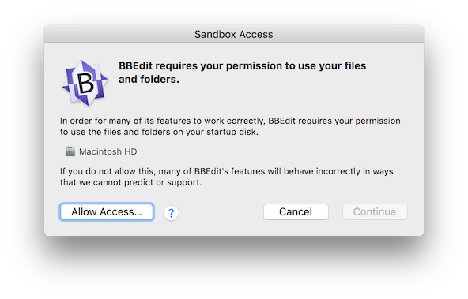
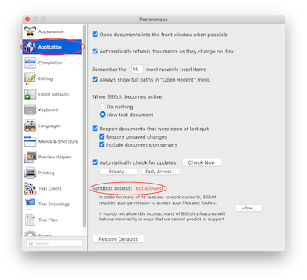
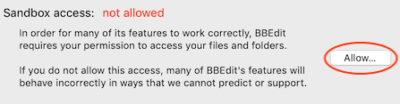

“App Sandboxing” is a term that refers to a collection of security technologies built in to macOS. Sandboxing is intended to protect you and your data by limiting the operation of applications to their intended use, which in turn makes it harder for malicious software or accidental misuse to cause data loss or damage to your computer.
One of the core concepts of App Sandboxing is that BBEdit, as a sandboxed application, is not allowed to use any of your files or folders without your explicit permission. You can grant this permission in one of a small number of ways, including (but not necessarily limited to):
However, as an advanced developer tool, BBEdit frequently requires access to files or folders that that you may not have specifically asked it to open, for safe and legitimate reasons:
.editorconfig files which control editor options for the file;
Without unrestricted access to your files and folders, many of BBEdit’s most useful features, from the basic to the most powerful, won't work at all; or they may misbehave in unexpected ways. At the very least, this hinders your ability to work done.
In order to resolve this fundamental conflict between security and usability, we have devised a solution in which BBEdit requests that you permit it the same sort of access to your files and folders that was previously available to non-sandboxed versions of BBEdit or TextWrangler.
This in no way compromises your security or that of your computer while using BBEdit, but does allow BBEdit to function at its fullest potential.
When starting for the first time, BBEdit will ask you to allow it to use your files and folders:
Use the “Allow Access…” button to confirm access to the top directory on your startup disk. Then, click the “Continue” button to continue. And that’s it! BBEdit now has the access it needs to do its job.
If you instead click the “Cancel” button, BBEdit will still start up normally, but won’t have the file access that it needs in order to operate correctly. Some features may behave unpredictably, or will not work at all.
Note: This prompt will only appear once.
If you clicked the “Cancel” button when BBEdit prompted you for access, and you’re finding that things aren’t behaving as they should, you can still grant BBEdit permission to use your files and folders.
To do this, open the Preferences window and select the “Application” item in the side bar. You should see something that looks like this:
Click the “Allow…” button to confirm access to the top directory of your startup disk.

And you're done!
macOS Mojave and later support a feature called “Full Disk Access”. Adding an application to the Full Disk Access list instructs the OS to permit that application to read and write files that reside in certain protected locations.
However, Full Disk Access has no interaction with App Sandboxing. Thus, if you add BBEdit to the Full Disk Access list, it will have no effect on its sandboxed behavior.
Conversely, granting BBEdit sandbox access as described above will not add it to the Full Disk Access list - the OS requires that you do so yourself, if desired.
If you would like to read about the technical aspects of sandboxing in depth, we recommend that you consult Apple’s developer documentation.